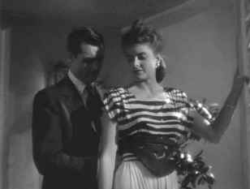

|
Notorious /A,B |
|
Anchor Bay/1946/102m/FS 1.33/BW |
Watching a classic like Notorious on DVD is pure pleasure. I found myself melting into the smooth, film-like images, succumbing to 1940s sophistication under Hitchcock’s mastery. Made in 1946, the black and white exercise in romantic espionage is a beautifully composed and photographed film. It appears that the digital magic wand was passed over the film elements with some frequency resulting in a relatively clean image that is slightly soft in some scenes. Overall, the relative cleanliness of the DVD is worth the sacrifice of some detail. In fact, thematically, the softer image works to advantage in this world of spies and agents lending their weight to great screen romance. The accolade film-like is a powerful compliment in home video. Notorious does its best to preserve the allusion. Film grain is fine and consistent. Contrast is powerful yet never blown out. Even the rear screen work, which often presents problems in transfer to DVD, looks very good. I forgive the couple lapses in condition of the source material. The DVD transfer should not distract you from the power of the story and filmmaking. The sound is clean enough, though there is a momentary lapse in one of the scenes between Devlin and Prescott where the level and tone changes.
|
 |
|
Seduction or recruitment? ©Anchor Bay |
So, what’s
Notorious all about? Alicia Huberman is a girl traveling in the fast lane. When her
father is convicted of espionage against the United States, American agent Devlin recruits her to
go undercover against Nazis plotting in Rio de Janeiro. Devlin’s charms and Alicia’s
vulnerability strike a bond. Alicia falls hard for Devlin, while the agent’s cynical side tries
to keep him from falling for the beautiful damsel. The screen sizzles with the sparks from these
two. Nothing can stop them from making a match, not the Nazis, not the movie censors, not even the
devious script of veteran Ben Hecht.
In Rio, the inevitable happens. Falling in love in Rio is marvelous
without being obvious. But this isn’t just a romance. When her undercover assignment is presented
to her, Alicia must make the hard decision to give up Devlin for the oily attention of Alex
Sebastian. Under the hostile stares of Sebastian’s mother, Alicia marries Sebastian and keeps her
eyes open for anything of importance to report to Devlin.
Notorious is one of Alfred Hitchcock’s most successful
films. It’s economy of style and direct approach is reflected in the gem-cut dialog. Hard,
clipped, suggestive and incisive, Ben Hecht’s script marries romance and suspense to perfection.
The characters and relationships are well drawn, the pace deliberately accelerating.
The screen chemistry between stars Ingrid Bergman and Cary Grant is
nothing shy of perfect. These actors conjure up more erotic images with their eyes than modern
stars manage with their body assets fully exposed. Bergman delves into Alicia’s pain and explores
her hopes. I can’t imagine the actress looking more beautiful than under cinematographer Ted
Tetzlaff’s soft, caressing lighting. Grant fascinates both the audience and Alicia as he holds
back and resists the charms of the lady and his own romantic impulses. Grant paints Devlin as cynic
and romantic. The actor presents a picture of sophistication and honesty on the screen. You can
believe in him just as Alicia believes in him. Hitchcock sets the stage for his actors to shine in
beautiful close-ups and intimate two-shots. The director’s timing is perfect in Notorious
. The supporting actors led by Claude Rains, surround Grant and Bergman with a rich world built by
character. Rains is dangerous and doting, suspicious and amorous. Louis Calhern adds some
additional sophistication to the American side of the picture as Devlin’s boss Prescott.
The DVD packaging is bare bones, but the 18 chapters are ample and the
black and white cover art presents an accurate feeling of the film. Fans of romance will love Notorious
for the beautiful love scenes. Suspense addicts will get their charge as the tension builds. Movie
lovers get everything they can ask for in this DVD of Notorious .
The Movie Poster Archive includes extensive poster images from the films of stars like Susan Hayward, Kirk Douglas, Katharine Hepburn and many more. Our featured star is Cary Grant.
Selections from the Feature Archive include articles on Akira Kurosawa, Frank Darabont, Blonde Bimbos, Hollywood Street Gangs, or Vietnam: The Hollywood Pariah, and many more....

What actor would you vote whose screen persona best exemplified the fabric of the president of the United States? Check act Acting Presidential for a look at the many actors who have coveted The Oval Office.

|
Home Theater Talk
Cartoons |


The Cinema Laser
A home grown magazine for laserphiles that has been publishing for a number of years and has
embraced DVD in a big way. Lots of helpful information.

DVD
Demystified makes it all clear.The official Internet DVD FAQ for the rec.video.dvd
Usenet newsgroups.

DVDinsider is a daily
email publication targeting the DVD Industry Professional. The publication includes current news,
events, stock prices and more.

Cinemedia is
the largest film and media directory with over 25,000 links.

Home to The American Society of Cinematographers. Includes features from
American Cinematographer Magazine and more...

Apocalypse Now is Coppola's distorted vision of war now on DVD in gorgeous anamorphic images.